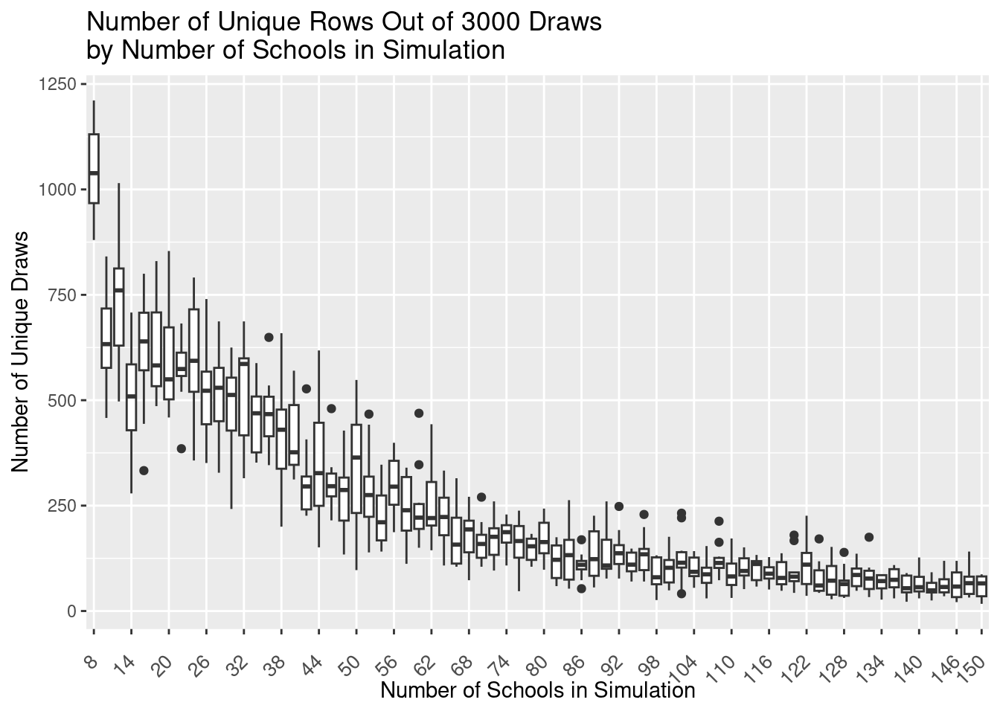

Behavior of N Schools Problem with Pathfinder
Introduction
During our investigation of using Pathfinder to fit hierarchical models, we found that pathfinder produced duplicated rows in the sample. This document reproduces the problem and shows that as the dimension of the parameter space increases, there are fewer and fewer distinct rows generated by the sample. We use the 8-Schools model to demonstrate the row duplication in the simple case. We then generate new data to extend the problem to \(N\) schools to show that the number of number of distinct rows decreases as the dimension increases. We make no claims to the cause of this at the moment.
Software Versions
In this demo we are using R version 4.4.1 (2024-06-14) with CmdStan version 2.35.0 and cmdstanr version 0.8.1.
Pathfinder with the (non-centered) 8 Schools Model
We first investigate the behavior of the 8-Schools.
library(cmdstanr)
library(jsonlite)
library(tidyverse)
library(glue)We use the following data:
#read in data
stan_data <- read_json( "eight_schools.json", simplifyVector=T)
print(stan_data)$J
[1] 8
$y
[1] 28 8 -3 7 -1 1 18 12
$sigma
[1] 15 10 16 11 9 11 10 18And use the stan script below to run our model.
data {
int <lower=0> J; // number of schools
array[J] real y; // estimated treatment
array[J] real<lower=0> sigma; // std of estimated effect
}
parameters {
vector[J] theta_trans; // transformation of theta
real mu; // hyper-parameter of mean
real<lower=0> tau; // hyper-parameter of sd
}
transformed parameters{
vector[J] theta;
// original theta
theta=theta_trans*tau+mu;
}
model {
theta_trans ~ normal (0,1);
y ~ normal(theta , sigma);
mu ~ normal(0, 5); // a non-informative prior
tau ~ cauchy(0, 5);
}Next, we run the 8-Schools model and extract draws to observe the number of distinct rows in the sample.
#### Run eight schools non-centered version
mod_eight <- cmdstanr::cmdstan_model( "eight_schools_noncentered.stan",
cpp_options=list(stan_threads=TRUE))
fit_eight <- mod_eight$pathfinder( data = stan_data,
refresh = 8,
draws=2000,
num_threads = 8,
num_paths = 20,
psis_resample = T
)Path [1] :Initial log joint density = -15.403892
Path [11] :Initial log joint density = -9.043529
Path [6] :Initial log joint density = -7.362072
Path [1] : Iter log prob ||dx|| ||grad|| alpha alpha0 # evals ELBO Best ELBO Notes
7 -8.238e-01 1.186e-01 6.806e-01 4.641e-01 4.641e-01 176 -4.935e+01 -4.935e+01
Path [16] :Initial log joint density = -10.634259
Path [6] : Iter log prob ||dx|| ||grad|| alpha alpha0 # evals ELBO Best ELBO Notes
7 -8.157e-01 5.843e-02 2.664e-01 6.070e-01 6.070e-01 176 -6.947e+01 -6.947e+01
Path [11] : Iter log prob ||dx|| ||grad|| alpha alpha0 # evals ELBO Best ELBO Notes
7 -9.601e-01 6.490e-01 1.305e+00 9.733e-01 9.733e-01 176 -7.272e+01 -7.272e+01
Path [13] :Initial log joint density = -7.464225Path [18] :Initial log joint density = -8.326769
Path [1] : Iter log prob ||dx|| ||grad|| alpha alpha0 # evals ELBO Best ELBO Notes
15 -7.961e-01 1.801e-02 2.138e-02 1.000e+00 1.000e+00 376 -4.039e+01 -4.039e+01
Path [17] :Initial log joint density = -7.310108
Path [16] : Iter log prob ||dx|| ||grad|| alpha alpha0 # evals ELBO Best ELBO Notes
7 -8.412e-01 9.531e-02 3.462e-01 4.962e-01 4.962e-01 176 -4.417e+01 -4.417e+01
Path [3] :Initial log joint density = -9.749312
Path [6] : Iter log prob ||dx|| ||grad|| alpha alpha0 # evals ELBO Best ELBO Notes
15 -7.966e-01 1.410e-01 1.073e-01 1.000e+00 1.000e+00 376 -4.553e+01 -4.553e+01
Path [11] : Iter log prob ||dx|| ||grad|| alpha alpha0 # evals ELBO Best ELBO Notes
15 -7.949e-01 3.960e-04 1.304e-03 1.000e+00 1.000e+00 376 -5.504e+01 -5.504e+01
Path [1] : Iter log prob ||dx|| ||grad|| alpha alpha0 # evals ELBO Best ELBO Notes
23 -7.949e-01 1.656e-04 9.173e-04 1.000e+00 1.000e+00 576 -4.156e+01 -4.156e+01
Path [16] : Iter log prob ||dx|| ||grad|| alpha alpha0 # evals ELBO Best ELBO Notes
15 -7.984e-01 9.946e-02 9.574e-02 1.000e+00 1.000e+00 376 -5.158e+01 -5.158e+01
Path [6] : Iter log prob ||dx|| ||grad|| alpha alpha0 # evals ELBO Best ELBO Notes
23 -7.949e-01 2.327e-04 3.841e-04 1.000e+00 1.000e+00 576 -5.230e+01 -5.230e+01
Path [13] : Iter log prob ||dx|| ||grad|| alpha alpha0 # evals ELBO Best ELBO Notes
7 -8.483e-01 1.337e-01 2.409e-01 6.853e-01 6.853e-01 176 -4.869e+01 -4.869e+01
Path [18] : Iter log prob ||dx|| ||grad|| alpha alpha0 # evals ELBO Best ELBO Notes
7 -9.495e-01 1.332e-01 8.663e-01 5.248e-01 5.248e-01 176 -5.261e+01 -5.261e+01
Path [1] : Iter log prob ||dx|| ||grad|| alpha alpha0 # evals ELBO Best ELBO Notes
28 -7.949e-01 1.258e-05 1.020e-04 2.927e-01 1.000e+00 701 -4.176e+01 -4.176e+01
Path [1] :Best Iter: [1] ELBO (-35.369096) evaluations: (701)
Path [17] : Iter log prob ||dx|| ||grad|| alpha alpha0 # evals ELBO Best ELBO Notes
7 -8.281e-01 2.165e-02 3.056e-01 2.714e-01 2.714e-01 176 -4.172e+01 -4.172e+01 Path [6] : Iter log prob ||dx|| ||grad|| alpha alpha0 # evals ELBO Best ELBO Notes
26 -7.949e-01 1.319e-05 5.677e-05 5.822e-01 5.822e-01 651 -3.893e+01 -3.893e+01
Path [6] :Best Iter: [1] ELBO (-35.970509) evaluations: (651)
Path [11] : Iter log prob ||dx|| ||grad|| alpha alpha0 # evals ELBO Best ELBO Notes
23 -7.949e-01 7.129e-04 2.202e-04 1.000e+00 1.000e+00 576 -4.779e+01 -4.779e+01
Path [11] : Iter log prob ||dx|| ||grad|| alpha alpha0 # evals ELBO Best ELBO Notes
24 -7.949e-01 5.938e-05 1.101e-04 9.701e-01 9.701e-01 601 -4.072e+01 -4.072e+01
Path [11] :Best Iter: [20] ELBO (-40.112736) evaluations: (601)
Path [16] : Iter log prob ||dx|| ||grad|| alpha alpha0 # evals ELBO Best ELBO Notes
23 -7.949e-01 3.072e-04 9.308e-04 2.640e-01 1.000e+00 576 -4.033e+01 -4.033e+01
Path [13] : Iter log prob ||dx|| ||grad|| alpha alpha0 # evals ELBO Best ELBO Notes
15 -7.975e-01 2.121e-02 1.228e-01 2.277e-01 2.277e-01 376 -7.418e+01 -7.418e+01
Path [18] : Iter log prob ||dx|| ||grad|| alpha alpha0 # evals ELBO Best ELBO Notes
15 -7.962e-01 5.264e-02 5.373e-02 1.000e+00 1.000e+00 376 -6.744e+01 -6.744e+01
Path [17] : Iter log prob ||dx|| ||grad|| alpha alpha0 # evals ELBO Best ELBO Notes
15 -7.956e-01 8.218e-02 7.766e-02 1.000e+00 1.000e+00 376 -4.846e+01 -4.846e+01
Path [16] : Iter log prob ||dx|| ||grad|| alpha alpha0 # evals ELBO Best ELBO Notes
30 -7.949e-01 4.684e-04 1.058e-04 1.000e+00 1.000e+00 751 -5.902e+01 -5.902e+01
Path [16] :Best Iter: [1] ELBO (-34.381547) evaluations: (751)
Path [3] : Iter log prob ||dx|| ||grad|| alpha alpha0 # evals ELBO Best ELBO Notes
7 -8.679e-01 7.070e-02 6.861e-01 5.417e-01 5.417e-01 176 -4.209e+01 -4.209e+01
Path [13] : Iter log prob ||dx|| ||grad|| alpha alpha0 # evals ELBO Best ELBO Notes
23 -7.949e-01 1.837e-04 5.063e-04 7.857e-01 7.857e-01 576 -4.534e+01 -4.534e+01
Path [18] : Iter log prob ||dx|| ||grad|| alpha alpha0 # evals ELBO Best ELBO Notes
23 -7.949e-01 1.629e-04 7.877e-05 1.000e+00 1.000e+00 576 -4.298e+01 -4.298e+01
Path [18] :Best Iter: [4] ELBO (-38.634705) evaluations: (576)
Path [17] : Iter log prob ||dx|| ||grad|| alpha alpha0 # evals ELBO Best ELBO Notes
23 -7.949e-01 2.579e-04 1.307e-04 1.000e+00 1.000e+00 576 -1.151e+02 -1.151e+02
Path [13] : Iter log prob ||dx|| ||grad|| alpha alpha0 # evals ELBO Best ELBO Notes
29 -7.949e-01 1.304e-04 1.409e-05 1.000e+00 1.000e+00 726 -3.954e+01 -3.954e+01
Path [13] :Best Iter: [17] ELBO (-38.928530) evaluations: (726)
Path [17] : Iter log prob ||dx|| ||grad|| alpha alpha0 # evals ELBO Best ELBO Notes
24 -7.949e-01 1.783e-05 3.601e-05 7.819e-01 7.819e-01 601 -4.717e+01 -4.717e+01
Path [17] :Best Iter: [19] ELBO (-39.715001) evaluations: (601)
Path [3] : Iter log prob ||dx|| ||grad|| alpha alpha0 # evals ELBO Best ELBO Notes
15 -7.982e-01 1.138e-02 2.003e-02 1.000e+00 1.000e+00 376 -8.276e+01 -8.276e+01
Path [3] : Iter log prob ||dx|| ||grad|| alpha alpha0 # evals ELBO Best ELBO Notes
23 -7.949e-01 4.126e-03 4.919e-03 1.000e+00 1.000e+00 576 -6.906e+01 -6.906e+01
Path [3] : Iter log prob ||dx|| ||grad|| alpha alpha0 # evals ELBO Best ELBO Notes
26 -7.949e-01 8.341e-05 8.084e-05 8.930e-01 8.930e-01 651 -4.104e+01 -4.104e+01
Path [3] :Best Iter: [1] ELBO (-34.482060) evaluations: (651)
Path [7] :Initial log joint density = -7.983349
Path [2] :Initial log joint density = -11.561649
Path [12] :Initial log joint density = -8.441708
Path [7] : Iter log prob ||dx|| ||grad|| alpha alpha0 # evals ELBO Best ELBO Notes
7 -8.436e-01 1.177e-01 3.979e-01 7.085e-01 7.085e-01 176 -5.472e+01 -5.472e+01 Path [2] : Iter log prob ||dx|| ||grad|| alpha alpha0 # evals ELBO Best ELBO Notes
7 -8.477e-01 4.051e-01 8.371e-01 8.511e-01 8.511e-01 176 -4.019e+01 -4.019e+01
Path [12] : Iter log prob ||dx|| ||grad|| alpha alpha0 # evals ELBO Best ELBO Notes
7 -8.218e-01 8.591e-02 3.427e-01 5.812e-01 5.812e-01 176 -5.406e+01 -5.406e+01
Path [4] :Initial log joint density = -9.263223
Path [19] :Initial log joint density = -13.006828
Path [14] :Initial log joint density = -9.118579
Path [8] :Initial log joint density = -8.903298
Path [7] : Iter log prob ||dx|| ||grad|| alpha alpha0 # evals ELBO Best ELBO Notes
15 -8.016e-01 9.433e-02 1.076e-01 1.000e+00 1.000e+00 376 -6.458e+01 -6.458e+01
Path [2] : Iter log prob ||dx|| ||grad|| alpha alpha0 # evals ELBO Best ELBO Notes
15 -7.957e-01 4.108e-03 9.185e-03 1.000e+00 1.000e+00 376 -6.827e+01 -6.827e+01
Path [12] : Iter log prob ||dx|| ||grad|| alpha alpha0 # evals ELBO Best ELBO Notes
15 -7.964e-01 4.490e-02 4.627e-02 1.000e+00 1.000e+00 376 -4.426e+01 -4.426e+01
Path [4] : Iter log prob ||dx|| ||grad|| alpha alpha0 # evals ELBO Best ELBO Notes
7 -8.182e-01 5.862e-02 2.947e-01 4.595e-01 4.595e-01 176 -6.271e+01 -6.271e+01
Path [19] : Iter log prob ||dx|| ||grad|| alpha alpha0 # evals ELBO Best ELBO Notes
7 -9.278e-01 2.961e-01 1.843e+00 1.000e+00 1.000e+00 176 -4.126e+01 -4.126e+01
Path [14] : Iter log prob ||dx|| ||grad|| alpha alpha0 # evals ELBO Best ELBO Notes
7 -8.182e-01 8.991e-02 2.752e-01 4.813e-01 4.813e-01 176 -4.215e+01 -4.215e+01
Path [8] : Iter log prob ||dx|| ||grad|| alpha alpha0 # evals ELBO Best ELBO Notes
7 -8.431e-01 1.273e-01 2.824e-01 6.886e-01 6.886e-01 176 -5.356e+01 -5.356e+01
Path [7] : Iter log prob ||dx|| ||grad|| alpha alpha0 # evals ELBO Best ELBO Notes
23 -7.949e-01 2.410e-03 4.986e-03 1.000e+00 1.000e+00 576 -1.822e+02 -1.822e+02
Path [2] : Iter log prob ||dx|| ||grad|| alpha alpha0 # evals ELBO Best ELBO Notes
23 -7.949e-01 3.969e-03 2.195e-03 1.000e+00 1.000e+00 576 -4.235e+01 -4.235e+01
Path [12] : Iter log prob ||dx|| ||grad|| alpha alpha0 # evals ELBO Best ELBO Notes
23 -7.949e-01 3.833e-03 3.991e-03 1.000e+00 1.000e+00 576 -4.814e+01 -4.814e+01
Path [15] :Initial log joint density = -9.167102
Path [2] : Iter log prob ||dx|| ||grad|| alpha alpha0 # evals ELBO Best ELBO Notes
25 -7.949e-01 7.948e-05 7.632e-05 9.962e-01 9.962e-01 626 -4.004e+01 -4.004e+01 Path [4] : Iter log prob ||dx|| ||grad|| alpha alpha0 # evals ELBO Best ELBO Notes
15 -7.968e-01 7.603e-02 6.711e-02 1.000e+00 1.000e+00 376 -1.082e+02 -1.082e+02
Path [2] :Best Iter: [1] ELBO (-34.999057) evaluations: (626)
Path [19] : Iter log prob ||dx|| ||grad|| alpha alpha0 # evals ELBO Best ELBO Notes
15 -7.964e-01 3.577e-03 3.384e-02 6.028e-01 6.028e-01 376 -4.726e+01 -4.726e+01 Path [14] : Iter log prob ||dx|| ||grad|| alpha alpha0 # evals ELBO Best ELBO Notes
15 -7.961e-01 1.897e-02 3.288e-02 1.000e+00 1.000e+00 376 -4.027e+01 -4.027e+01
Path [8] : Iter log prob ||dx|| ||grad|| alpha alpha0 # evals ELBO Best ELBO Notes
15 -8.024e-01 4.231e-01 2.776e-01 1.000e+00 1.000e+00 376 -8.587e+02 -8.587e+02
Path [7] : Iter log prob ||dx|| ||grad|| alpha alpha0 # evals ELBO Best ELBO Notes
31 -7.949e-01 2.704e-04 3.557e-04 6.795e-01 6.795e-01 776 -4.012e+01 -4.012e+01
Path [12] : Iter log prob ||dx|| ||grad|| alpha alpha0 # evals ELBO Best ELBO Notes
31 -7.949e-01 2.499e-05 8.499e-05 9.669e-01 9.669e-01 776 -4.145e+01 -4.145e+01
Path [12] :Best Iter: [1] ELBO (-34.982855) evaluations: (776)
Path [7] : Iter log prob ||dx|| ||grad|| alpha alpha0 # evals ELBO Best ELBO Notes
32 -7.949e-01 3.022e-04 5.318e-05 8.563e-01 8.563e-01 801 -4.634e+01 -4.634e+01
Path [15] : Iter log prob ||dx|| ||grad|| alpha alpha0 # evals ELBO Best ELBO Notes
7 -8.256e-01 1.927e-01 2.648e-01 6.248e-01 6.248e-01 176 -4.049e+01 -4.049e+01
Path [7] :Best Iter: [21] ELBO (-39.250935) evaluations: (801)
Path [4] : Iter log prob ||dx|| ||grad|| alpha alpha0 # evals ELBO Best ELBO Notes
23 -7.949e-01 8.380e-04 4.365e-04 7.283e-01 7.283e-01 576 -5.324e+01 -5.324e+01
Path [19] : Iter log prob ||dx|| ||grad|| alpha alpha0 # evals ELBO Best ELBO Notes
23 -7.949e-01 2.373e-04 1.332e-03 9.927e-01 9.927e-01 576 -4.436e+01 -4.436e+01
Path [14] : Iter log prob ||dx|| ||grad|| alpha alpha0 # evals ELBO Best ELBO Notes
23 -7.949e-01 4.758e-03 5.065e-03 1.000e+00 1.000e+00 576 -5.932e+01 -5.932e+01
Path [8] : Iter log prob ||dx|| ||grad|| alpha alpha0 # evals ELBO Best ELBO Notes
23 -7.949e-01 5.552e-03 6.900e-03 1.000e+00 1.000e+00 576 -4.414e+01 -4.414e+01
Path [14] : Iter log prob ||dx|| ||grad|| alpha alpha0 # evals ELBO Best ELBO Notes
27 -7.949e-01 2.349e-05 9.066e-05 1.000e+00 1.000e+00 676 -4.116e+01 -4.116e+01
Path [14] :Best Iter: [1] ELBO (-34.181538) evaluations: (676)
Path [19] : Iter log prob ||dx|| ||grad|| alpha alpha0 # evals ELBO Best ELBO Notes
28 -7.949e-01 7.997e-05 1.864e-05 9.752e-01 9.752e-01 701 -3.862e+01 -3.862e+01
Path [19] :Best Iter: [1] ELBO (-34.608243) evaluations: (701)
Path [15] : Iter log prob ||dx|| ||grad|| alpha alpha0 # evals ELBO Best ELBO Notes
15 -8.078e-01 7.692e-02 1.372e-01 1.000e+00 1.000e+00 376 -5.706e+01 -5.706e+01
Path [8] : Iter log prob ||dx|| ||grad|| alpha alpha0 # evals ELBO Best ELBO Notes
27 -7.949e-01 7.840e-05 8.069e-05 1.000e+00 1.000e+00 676 -4.807e+01 -4.807e+01
Path [8] :Best Iter: [1] ELBO (-34.712790) evaluations: (676)
Path [4] : Iter log prob ||dx|| ||grad|| alpha alpha0 # evals ELBO Best ELBO Notes
31 -7.949e-01 4.494e-05 2.156e-04 9.507e-02 1.000e+00 776 -5.157e+01 -5.157e+01
Path [4] : Iter log prob ||dx|| ||grad|| alpha alpha0 # evals ELBO Best ELBO Notes
32 -7.949e-01 2.040e-04 9.827e-05 9.602e-01 9.602e-02 801 -5.031e+01 -5.031e+01
Path [4] :Best Iter: [2] ELBO (-39.621904) evaluations: (801)
Path [15] : Iter log prob ||dx|| ||grad|| alpha alpha0 # evals ELBO Best ELBO Notes
23 -7.949e-01 2.225e-03 4.373e-03 1.000e+00 1.000e+00 576 -3.845e+01 -3.845e+01
Path [15] : Iter log prob ||dx|| ||grad|| alpha alpha0 # evals ELBO Best ELBO Notes
31 -7.949e-01 1.820e-04 2.190e-04 1.000e+00 1.000e+00 776 -6.911e+01 -6.911e+01
Path [15] : Iter log prob ||dx|| ||grad|| alpha alpha0 # evals ELBO Best ELBO Notes
36 -7.949e-01 8.674e-05 3.439e-05 1.000e+00 1.000e+00 901 -3.885e+01 -3.885e+01
Path [15] :Best Iter: [1] ELBO (-35.317922) evaluations: (901)
Path [20] :Initial log joint density = -9.841293
Path [5] :Initial log joint density = -10.261413
Path [9] :Initial log joint density = -11.135721
Path [20] : Iter log prob ||dx|| ||grad|| alpha alpha0 # evals ELBO Best ELBO Notes
7 -8.346e-01 2.252e-01 3.646e-01 1.000e+00 1.000e+00 176 -7.330e+01 -7.330e+01
Path [10] :Initial log joint density = -11.867772
Path [9] : Iter log prob ||dx|| ||grad|| alpha alpha0 # evals ELBO Best ELBO Notes
7 -8.029e-01 8.677e-02 1.136e-01 1.000e+00 1.000e+00 176 -4.512e+01 -4.512e+01 Path [5] : Iter log prob ||dx|| ||grad|| alpha alpha0 # evals ELBO Best ELBO Notes
7 -8.261e-01 3.192e-02 2.888e-01 3.803e-01 3.803e-01 176 -4.169e+01 -4.169e+01
Path [20] : Iter log prob ||dx|| ||grad|| alpha alpha0 # evals ELBO Best ELBO Notes
15 -8.020e-01 4.141e-01 2.325e-01 1.000e+00 1.000e+00 376 -4.245e+01 -4.245e+01
Path [10] : Iter log prob ||dx|| ||grad|| alpha alpha0 # evals ELBO Best ELBO Notes
7 -8.546e-01 2.251e-01 6.238e-01 4.916e-01 4.916e-01 176 -4.258e+01 -4.258e+01
Path [5] : Iter log prob ||dx|| ||grad|| alpha alpha0 # evals ELBO Best ELBO Notes
15 -7.992e-01 1.098e-01 1.126e-01 1.000e+00 1.000e+00 376 -4.852e+01 -4.852e+01
Path [9] : Iter log prob ||dx|| ||grad|| alpha alpha0 # evals ELBO Best ELBO Notes
15 -7.950e-01 1.076e-01 2.748e-02 1.000e+00 1.000e+00 376 -5.768e+01 -5.768e+01
Path [20] : Iter log prob ||dx|| ||grad|| alpha alpha0 # evals ELBO Best ELBO Notes
23 -7.949e-01 2.325e-03 4.040e-04 9.640e-01 9.640e-01 576 -5.758e+01 -5.758e+01
Path [20] : Iter log prob ||dx|| ||grad|| alpha alpha0 # evals ELBO Best ELBO Notes
24 -7.949e-01 1.119e-04 5.505e-05 1.000e+00 1.000e+00 601 -4.399e+01 -4.399e+01
Path [20] :Best Iter: [21] ELBO (-40.153492) evaluations: (601)
Path [10] : Iter log prob ||dx|| ||grad|| alpha alpha0 # evals ELBO Best ELBO Notes
15 -7.953e-01 2.202e-03 6.086e-03 9.629e-01 9.629e-01 376 -4.218e+01 -4.218e+01
Path [5] : Iter log prob ||dx|| ||grad|| alpha alpha0 # evals ELBO Best ELBO Notes
23 -7.949e-01 3.588e-04 8.380e-04 1.000e+00 1.000e+00 576 -4.599e+01 -4.599e+01
Path [9] : Iter log prob ||dx|| ||grad|| alpha alpha0 # evals ELBO Best ELBO Notes
23 -7.949e-01 6.754e-04 8.155e-05 1.000e+00 1.000e+00 576 -4.395e+01 -4.395e+01
Path [9] :Best Iter: [1] ELBO (-34.259371) evaluations: (576)
Path [10] : Iter log prob ||dx|| ||grad|| alpha alpha0 # evals ELBO Best ELBO Notes
23 -7.949e-01 2.027e-03 4.971e-03 1.000e+00 1.000e+00 576 -7.052e+01 -7.052e+01
Path [5] : Iter log prob ||dx|| ||grad|| alpha alpha0 # evals ELBO Best ELBO Notes
28 -7.949e-01 5.055e-05 8.787e-05 1.000e+00 1.000e+00 701 -4.339e+01 -4.339e+01
Path [5] :Best Iter: [27] ELBO (-40.102442) evaluations: (701)
Path [10] : Iter log prob ||dx|| ||grad|| alpha alpha0 # evals ELBO Best ELBO Notes
28 -7.949e-01 2.612e-05 7.177e-05 6.829e-01 6.829e-01 701 -4.078e+01 -4.078e+01
Path [10] :Best Iter: [1] ELBO (-35.050902) evaluations: (701)
Total log probability function evaluations:33295
Pareto k value (0.92) is greater than 0.7. Importance resampling was not able to improve the approximation, which may indicate that the approximation itself is poor.
Finished in 0.2 seconds.After running pathfinder, we check the number of distinct draws in the output
eight_df <- fit_eight$draws(format="df")
#get number of distinct rows from output
d_rows <- eight_df %>% select(-.chain, -.iteration, -.draw) %>% distinct() %>% nrow()
#get total number of rows
rows <- nrow(eight_df)We note that there were 961 distinct rows out of 2000 total rows.
Generating “New Schools”
After reviewing the 8-Schools model, we wanted to investigate how increasing the number of schools affected the number of distinct draws from pathfinder. We did so by modeling the original 8-schools data set. In our model, we parameterize the variance along with the mean. Our goal is to then generate N schools and model them via Pathfinder.
We use the following stan script:
data {
int <lower=0> J; // number of schools
array[J] real y; // estimated treatment
array[J] real<lower=0> sigma; // std of estimated effect
}
transformed data{
array[J] real<lower=0> sigma_2;
sigma_2 = pow(sigma,2);
}
parameters {
vector[J] theta_trans; // transformation of theta
real mu; // hyper-parameter of mean
real<lower=0> tau; // hyper-parameter of sd
real<lower=0> phi;
}
transformed parameters{
vector[J] theta;
real<lower=0> sqrt_phi;
real<lower=0> tau_sq;
// original theta
theta=theta_trans*tau+mu;
sqrt_phi = sqrt(phi);
tau_sq = pow(tau,2);
}
model {
theta_trans ~ normal (0,1);
y ~ normal(theta , sqrt_phi);
sigma_2 ~ inv_gamma(2, phi );
mu ~ normal(0, 5); // a non-informative prior
tau ~ cauchy(0, 5);
phi ~ gamma(1,1);
}Next we run the model using HMC to get the parameter estimates we will use later to generate new data.
#### Run eight schools non-centered version
suppressWarnings(mod1 <- cmdstanr::cmdstan_model( "eight_schools_noncentered_gvf.stan",
cpp_options=list(stan_threads=TRUE) ) )
#Fit our new model to 8-schools with HMC
fit_samp = mod1$sample( data = stan_data,
chains=3,
threads_per_chain=1,
refresh=300,
adapt_delta = .99 )Running MCMC with 3 sequential chains, with 1 thread(s) per chain...
Chain 1 Iteration: 1 / 2000 [ 0%] (Warmup)
Chain 1 Iteration: 300 / 2000 [ 15%] (Warmup)
Chain 1 Iteration: 600 / 2000 [ 30%] (Warmup)
Chain 1 Iteration: 900 / 2000 [ 45%] (Warmup)
Chain 1 Iteration: 1001 / 2000 [ 50%] (Sampling)
Chain 1 Iteration: 1300 / 2000 [ 65%] (Sampling)
Chain 1 Iteration: 1600 / 2000 [ 80%] (Sampling)
Chain 1 Iteration: 1900 / 2000 [ 95%] (Sampling)
Chain 1 Iteration: 2000 / 2000 [100%] (Sampling)
Chain 1 finished in 0.2 seconds.
Chain 2 Iteration: 1 / 2000 [ 0%] (Warmup)
Chain 2 Iteration: 300 / 2000 [ 15%] (Warmup)
Chain 2 Iteration: 600 / 2000 [ 30%] (Warmup)
Chain 2 Iteration: 900 / 2000 [ 45%] (Warmup)
Chain 2 Iteration: 1001 / 2000 [ 50%] (Sampling)
Chain 2 Iteration: 1300 / 2000 [ 65%] (Sampling)
Chain 2 Iteration: 1600 / 2000 [ 80%] (Sampling)
Chain 2 Iteration: 1900 / 2000 [ 95%] (Sampling)
Chain 2 Iteration: 2000 / 2000 [100%] (Sampling)
Chain 2 finished in 0.2 seconds.
Chain 3 Iteration: 1 / 2000 [ 0%] (Warmup)
Chain 3 Iteration: 300 / 2000 [ 15%] (Warmup)
Chain 3 Iteration: 600 / 2000 [ 30%] (Warmup)
Chain 3 Iteration: 900 / 2000 [ 45%] (Warmup)
Chain 3 Iteration: 1001 / 2000 [ 50%] (Sampling)
Chain 3 Iteration: 1300 / 2000 [ 65%] (Sampling)
Chain 3 Iteration: 1600 / 2000 [ 80%] (Sampling)
Chain 3 Iteration: 1900 / 2000 [ 95%] (Sampling)
Chain 3 Iteration: 2000 / 2000 [100%] (Sampling)
Chain 3 finished in 0.1 seconds.
All 3 chains finished successfully.
Mean chain execution time: 0.2 seconds.
Total execution time: 0.8 seconds.Finally, we obtain the following parameter estimates that will be used in the next section
mydraws <- fit_samp$draws(format="df")
library(invgamma)
mu_bar <- mydraws$mu %>% mean()
tausq_bar <- mydraws$tau_sq %>% mean()
phi_bar <- mydraws$phi %>% mean()
cat("****Parameters Estimated From Model****","\n",
"mu_bar:",mu_bar,"\n",
"tausq_bar:", tausq_bar,"\n",
"phi_bar:", phi_bar)****Parameters Estimated From Model****
mu_bar: 5.706761
tausq_bar: 117.2809
phi_bar: 16.1635Fitting N Schools
Our Procedure
We will run the N school problem from 8 to 150 schools by 2, 10 times each using the parameters we found from HMC. For each simulation, we generate new data as shown below.
N <- x
sigma <- rinvgamma(N, 2, scale = phi_bar)
theta <- rnorm(N, mu_bar, tausq_bar )
y <- rnorm(theta,phi_bar)We then run pathfinder using the call below.
#run pathfinder
fit_pf = mod_eight$pathfinder( data = temp[[k]][['stan_data_gen']],
draws=3000,
num_threads = 12,
num_paths = 20,
psis_resample = T) After each iteration of the loop, we store the model fit and the draws. We will perform analysis on this afterwards.
Main Loop
We perform the steps noted in the previous section in the main loop below.
We run the model for 8 to 150 schools by 2, 10 times each.
library(parallel)
#status file just helps us keep track of progress
file.remove("status.txt")[1] TRUE#N_tot is a sequence of number of schools
#we will generate
N_tot <- seq(from=8, to=150, by=2)
#for each number of
n_times <- 10
#function I will use in an lapply
myloop <- function(x){
#store the n_times simulations
temp <- list()
#begin simulating n_times
for(k in 1:n_times){
#this is simply here for me to keep track of the simulation
write_lines( x = paste0("Number of Schools: ",x," Simulation Number: ", k),
file= "status.txt",
append=T )
#create a holder for this
#simulations results
temp[[k]] <- list()
#Generate New Data
N <- x
sigma <- rinvgamma(N, 2, scale = phi_bar)
theta <- rnorm(N, mu_bar, tausq_bar )
y <- rnorm(theta,phi_bar)
#store the data we will use
temp[[k]][['stan_data_gen']] <- list(J=N,y=y,sigma=sigma)
#run pathfinder
fit_pf = mod_eight$pathfinder( data = temp[[k]][['stan_data_gen']],
draws=3000,
refresh=0,
num_threads = 4,
num_paths = 20,
psis_resample = T)
#store the model
temp[[k]][['model']] <- fit_pf
temp[[k]][['draws']] <- fit_pf$draws(format="df")
}
return( temp )
}
#run simulation
#results <- lapply(N_tot,myloop) #I use this on Windows
results <- mclapply(N_tot,myloop,mc.preschedule=F,mc.cores=40)After running the simulation, we extract the number of schools in each simulation along with the number of unique draws from the simulation.
#number of schools in each simulation
nschools <- results %>% map( ~map_int( .x, ~pluck(.x,"stan_data_gen","J") )) %>% list_c()
#return number of unique
getdistinctdraws <- . %>%
select(-.chain, -.iteration, -.draw) %>%
distinct() %>%
nrow()
#get number of distinct samples in each simulation
uniquedraws <- results %>%
map( ~map_int( .x, ~( pluck(.x,"draws") %>% getdistinctdraws) )) %>%
list_c()
df_summary <- tibble(nschools = as.factor(nschools),
n_unique_draws = uniquedraws)Finally we plot a violin plot of the number of unique rows.
library(scales)
Attaching package: 'scales'The following object is masked from 'package:purrr':
discardThe following object is masked from 'package:readr':
col_factordf_summary %>% ggplot(aes(x=nschools,y=n_unique_draws)) +
geom_boxplot() +
geom_point(size=.1) +
scale_x_discrete(breaks=pretty_breaks(n=15)) +
labs(title="Number of Unique Rows Out of 3000 Draws \nby Number of Schools in Simulation",
y = "Number of Unique Draws",
x="Number of Schools in Simulation") +
theme(axis.text.x = element_text(angle = 45, vjust = 0.5, hjust=1,size=10))